Cerulean blue
Cobalt and tin found together.
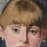
ManetA Bar at the Folies-Bergère · 1882All 16A studio guide · Paris, winter 1881–82
Imagine you are Édouard Manet, ill and often painting seated, with a marble bar set up in your studio and a barmaid from the Folies-Bergère posing behind it for the Salon of 1882. This guide follows what your process would have been, from copying your oil sketch onto a big canvas to the reflection you kept moving.
X-rays published in 1986, the Courtauld's 2019 catalogue and a 2019 imaging study show what you changed; no one has published the ground, an underdrawing or a full pigment analysis, so the order of the later stages is inferred. Each chapter opens with a note on what its evidence is. The slider steps through seven stages; all but the last are AI reconstructions.
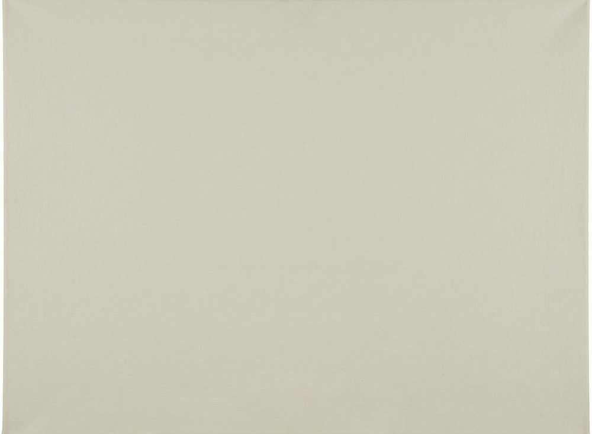
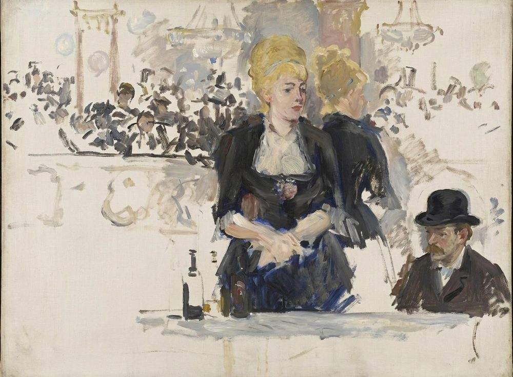
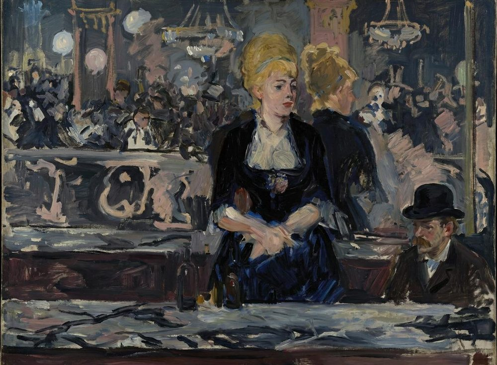

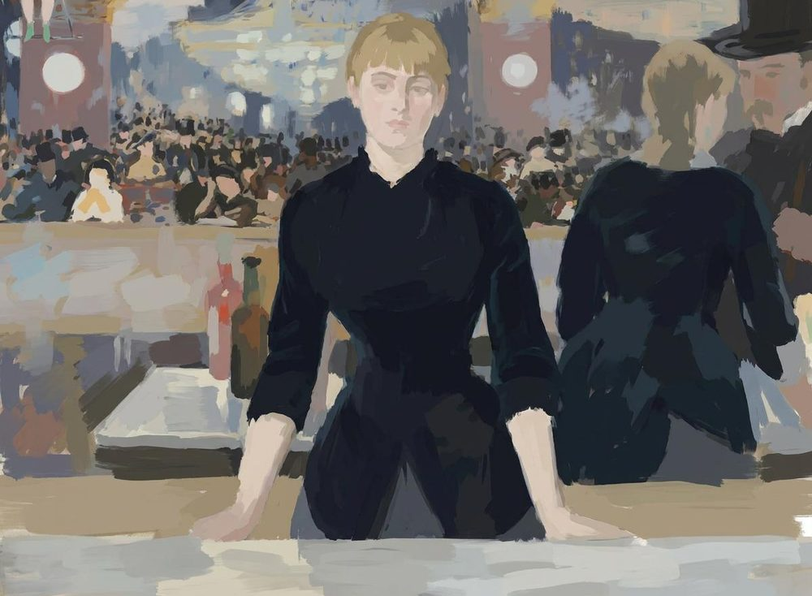
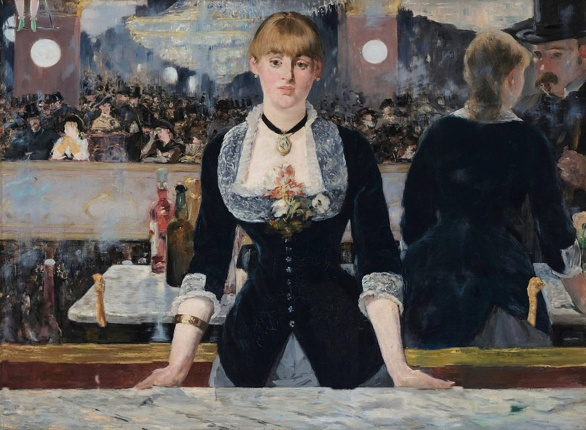
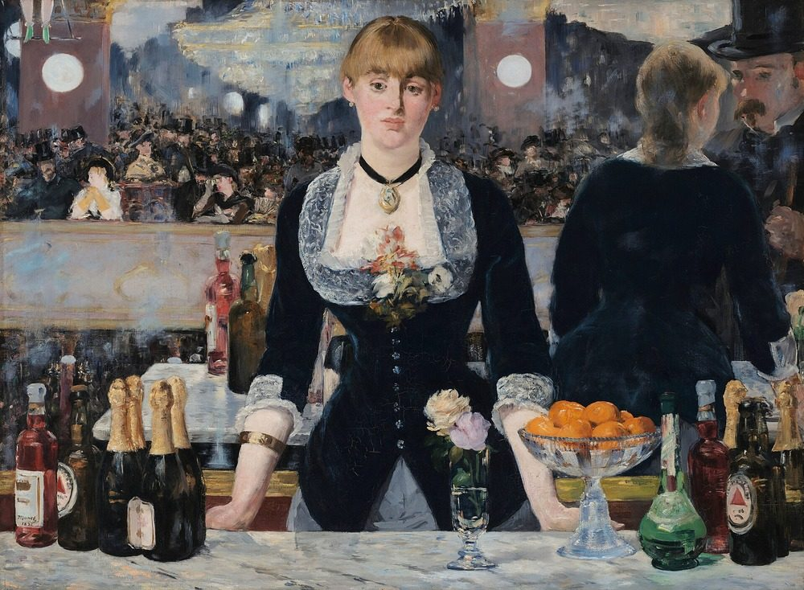
Still life
Stage 7 of 7Bottles, mandarins and roses on the marble, more finely painted than the figure, and your name on a label. This is the painting today.
EvidenceStandard biographies, the Courtauld's 2019 catalogue and the museums' records of the café pictures.
You are Édouard Manet. In the 1850s you trained in the studio of Thomas Couture, and for twenty years since, your Salon pictures have been mocked as often as admired.
Between 1878 and 1880 you painted a run of café-concert pictures, set at the Brasserie de Reichshoffen on the boulevard Rochechouart: waitresses carrying beer, customers in top hats, a singer glimpsed on a stage. One canvas you cut in two; its halves are now Corner of a Café-Concert in London and Au Café in Winterthur.
In them a working woman stands at the front of a crowded room, busy and looking elsewhere. The bar picture takes that idea to the scale of a Salon painting.
EvidenceThe Getty's 2007 exhibition texts, period images of the hall, and the Courtauld's 2019 catalogue, citing John House.
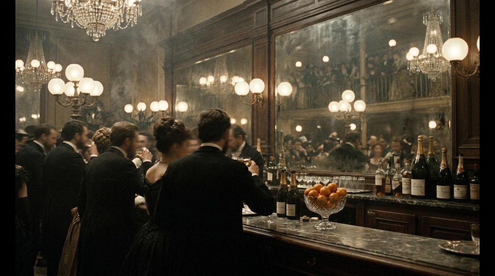
The Folies-Bergère opened in 1869 at 32 rue Richer. It is a music hall with walkways lined with bars, chandeliers and mirrors, and acrobats on the trapeze overhead. A poster of the period boasts that it is lit entirely by electricity. Maupassant, Huysmans and the Goncourts all wrote about it.
You have sent pictures to the Salon for more than twenty years, and in 1881 you finally won a medal, second class. That exempts you from the jury: whatever you send in 1882 will be hung.
EvidenceSotheby's 2015 catalogue of the oil sketch, summarising Juliet Wilson-Bareau's 1986 X-rays and Leenhoff's notes; the Dijon museum's pastel.
You make quick ink sketches at the Folies-Bergère itself: one of the balcony, and one of a barmaid talking to a man, both seen in the mirror. Where those sheets are now has not been traced.
From the second you paint an oil sketch in the studio, about half a metre wide. The barmaid stands at an angle, her hands clasped at her waist; her reflection stands close beside her, where a reflection should be; and the customer, a man in a bowler hat, is your neighbour Henry Dupray, a military painter, according to Leenhoff. Leenhoff dates it to summer 1881; others place it as late as the end of that year.
An X-ray of the sketch shows it was hardly altered: you moved the man and bared a little more of her bosom. You also draw Suzon, the barmaid who will pose for you, in pastel, in a black hat with a pink bouquet.
EvidenceThe Courtauld's 2019 catalogue, Colin Bailey's 2020 account of your last years, and Henri Jeanniot's memoir, published about 25 years after the event.
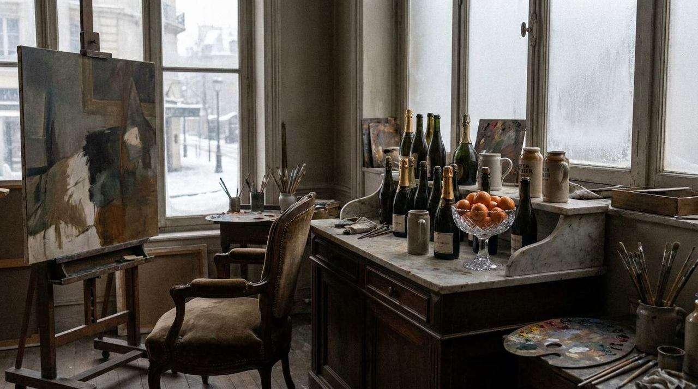
You paint the picture in your studio at 77 rue d'Amsterdam, where you have worked since April 1879. A restaurant buffet with a marble top is brought in, loaded with bottles, and Suzon, a real barmaid from the Folies-Bergère, poses behind it.
You are ill. Tertiary syphilis has brought on locomotor ataxia, and you often have to paint sitting down; your friend Théodore Duret said you were practically nailed to your chair. You will die on 30 April 1883, a year after the Salon.
The painter Henri Jeanniot visits in January 1882 and finds a pretty girl posing behind a table laden with bottles. Writing long afterwards, he adds that although you painted from life, you were in no way copying nature. Your advice to him is “Pas de pensum!”: painting must never become a chore.
EvidenceA 2019 imaging study (Amato and colleagues) that mapped elements over the barmaid and her reflection only. No paint samples were taken from this painting.
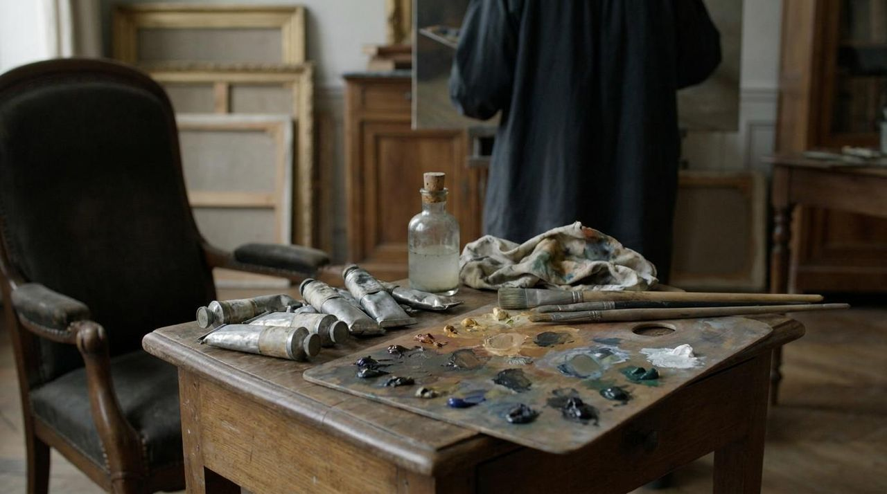
At 96 by 130 centimetres your canvas matches the standard French size 60 for figures, so you probably bought it ready-primed. Its ground has not been published, and no underdrawing has been reported.
The only scientific study of the paint mapped the elements over the barmaid and her reflection; nobody has taken a sample. The cards below say how far each identification goes: mapped on this painting, a hypothesis from the maps, or reported for the four Courtauld Manets as a group.
Cobalt and tin found together.
With cerulean, in the thick repainting over her first hands.
Copper and arsenic in the same repainting, with a chromium pigment.
Chromium, antimony and zinc together.
Reds, and flesh mixed with lead white.
Calcium in the blacks.
EvidenceJuliet Wilson-Bareau's X-rays (1986), as summarised by Sotheby's in 2015; the Courtauld's 2019 catalogue; Amato and colleagues (2019). The X-ray images are not openly published, so these stages are drawn from descriptions.
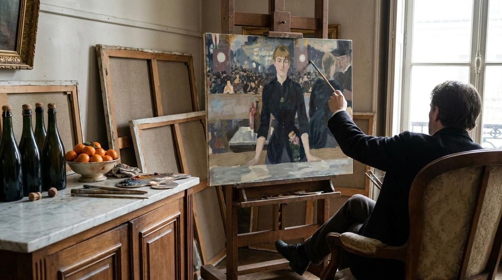
Beneath the surface lies a composition much closer to the sketch: her hands clasped across her waist, her reflection near her, the man lower down.
Paint out the clasped hands and give her straight arms, hands resting on the marble. The repainting is thick: over the first hands the element maps point to blues, emerald green and a chromium pigment.
Shift her reflection to the right, to a less logical place; the X-ray shows it was altered twice. Move the man up into the top right corner.
The Courtauld's catalogue says the X-rays reveal endless reworking at every stage, directly on the canvas. In March 1882 your brother Eugène writes to his wife, Berthe Morisot, that you are still reworking the same picture.
The first hands are still faintly there: in infrared light at 2,100 nanometres, where the thick paint over them turns more transparent, faint traces of them show through.
EvidenceThe Courtauld's records and 2019 catalogue for the handling and the objects. The order of these three steps is not recorded.
The big canvas is under way by January 1882, when Jeanniot sees it, and must be ready for the Salon in May. These three steps are one plausible order for finishing it.
AI-generatedAfter step 3: the still life
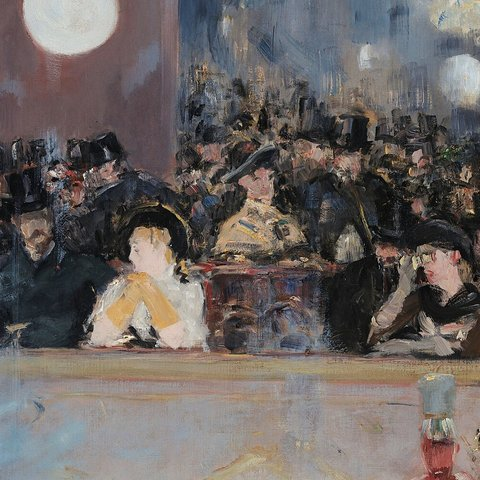
Everything behind her is a reflection: the balcony across the hall, its crowd, the columns with their globe lamps and the chandeliers. Paint it loosely, as dabs and smears; the Courtauld calls the crowd loosely painted.
Among the faces, the woman in white is thought to be Méry Laurent and the one beside her Jeanne Demarsy. Neither identification is documented.
At top left, put in a pair of legs in green boots on a trapeze: the act is going on over everyone's heads. The performer is not identified.
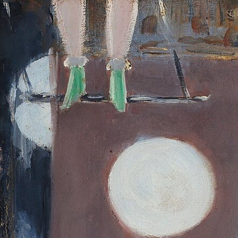
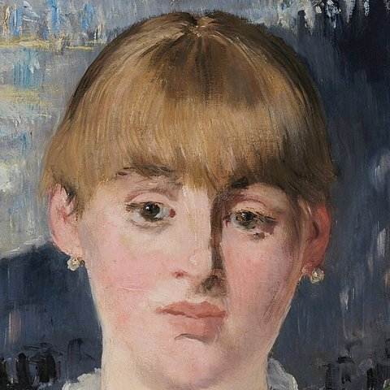
The barmaid of the sketch had piled-up curls and a snub nose. Now give her a straight-cut fringe and a severe Grecian nose, a black velvet choker with a medallion, lace at the neck and a corsage of flowers.
Her body is more broadly handled than the objects in front of her. Her reflection, at right, is plumper than the wasp-waisted woman you see from the front, and it leans towards the man, whom you have moved up into the corner.
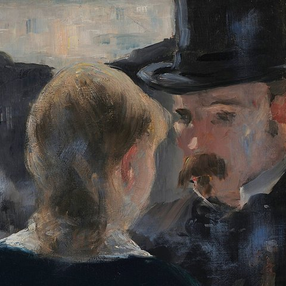
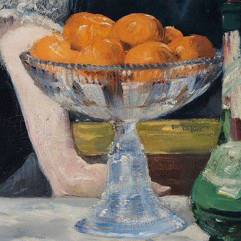
Then the counter, though the order is a guess: bottles of Bass with its red triangle, champagne in gold foil and green crème de menthe, a crystal dish of mandarins and two roses in a glass. These are painted with more finesse than the barmaid.
The element maps suggest the mandarins' orange is a mixture of chrome-type yellow and orange with Naples yellow. That is the imaging team's hypothesis, not a sampled result.
Sign on the label of the bottle at far left: “Manet / 1882”.
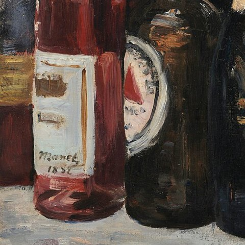
EvidenceThe Courtauld's 2019 catalogue and Colin Bailey (2020) on the Salon; reviews as summarised there.
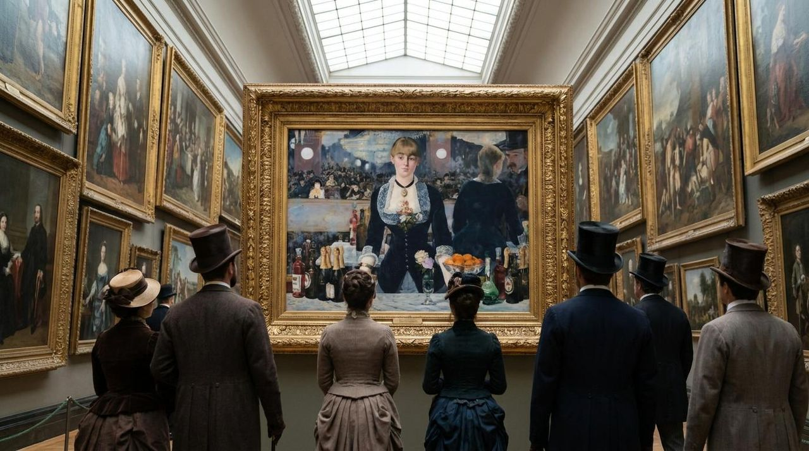
In May 1882 the picture hangs at the Salon, as does your other entry, Jeanne (Spring), a half-length of a young woman with a parasol. Critics like Jeanne better.
The bar puzzles them. In Le Journal amusant the caricaturist Stop redraws it as “a seller of consolation at the Folies-Bergère” and puts the reflections where they ought to be. In L'Art moderne (1883), Joris-Karl Huysmans judges it a flawed masterpiece.
By 1884 the engraver Henri Guérard has etched it, so the composition circulates in print.
EvidenceMalcolm Park (2000–01) and Thierry de Duve (2012) on the reflection; the Courtauld's records; an archive catalogue entry whose contents were not checked.
Is the reflection possible? Many viewers have said no: she faces you, yet her reflection is off to the right, talking to a man who should be standing where you are. In 2000 and 2001 Malcolm Park showed that a consistent arrangement can be built if the viewer stands off to the right and the man stands outside the picture. Thierry de Duve accepts Park's model but argues that the painting is made to work against what you intuitively see. The question is still argued.